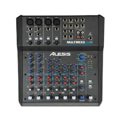
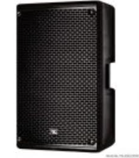
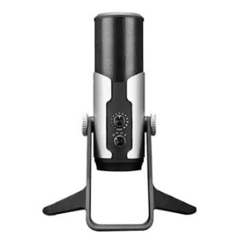

Final songsawat
xxxxxxxxxxxxxxxx
Dxxxxxxxxxxxxxigital Literacy คือ ความสามารถในการเข้าใจ เข้าถึง และใช้เทคโนโลยีดิจิทัลที่มีอยู่ในปัจจุบันได้อย่างมีประสิทธิภาพ โดยเป็นทักษะพื้นฐานสำคัญที่ทุกคนควรมี เพราะทักษะนี้เป็นตัวช่วยในการต่อยอดไปสู่ทักษะอื่น ๆ ที่เฉพาะเจาะจงกับสายอาชีพมากขึ้น พูดง่าย ๆ ก็คือ การเข้าใจเทคโนโลยีขึ้นพื้นฐานที่ต้องใช้ในองค์กร และทํางานร่วมกับผู้อื่น เช่น การใช้คอมพิวเตอร์ การใช้โปรแกรมทําเสนองาน การใช้ Zoom เพื่อทํางาน หรือ ประชุมออนไลน์ รวมถึงการใช้เครื่องมือดิจิทัลเพื่อความปลอดภัยของข้อมูล เพราะเมื่อองค์กรปรับการทํางาน และป่าเทคโนโลยีมาใช้อย่างเต็มรูปแบบเมื่อใด แต่พนักงานไม่เรียนรู้ และปรับตัวก็จะทําให้การเปลี่ยนแปลง เป็นไปได้ยาก หรือถ้าเป็นสายงานที่ต้องการทักษะเฉพาะทางขึ้นไปอีก เช่น Digital Marketing ก็ควรรู้ Tools พื้นฐานที่จําเป็นต่อการทํางาน เช่น การเก็บข้อมูลผู้เข้าชมเว็บไซต์ผ่าน Google Analytics การทำ SEM (Search Engine Marketing) ผ่าน Google Ads หรือมีความรู้ความเข้าใจในความแตกต่างของแต่ละแพลตฟอร์ม เพื่อสามารถนำไปวิเคราะห์ข้อมูลเชิงลึก หรือวางกลยุทธ์ต่อได้
อุปกรณ์เครื่องเสียง
| # | รายการสินค้า | ราคา | หมายเหตุ |
|---|---|---|---|
| 1 |  | 6,900 | มิกเซอร์ 8 แชนแนล พร้อมช่องต่อแบบ Mic, Line, และ Guitar 16-bit. 44.1/48 kHz Stereo USB Output สำหรับการบันทึกเสียง และ เล่นเสียงผ่านคอมพิวเตอร์แบบง่าย ๆ ช่องเสียบ XLR พร้อม Gain Trim, High-Pass Filters และ 48V Phantom Power ใช้กับอุปกรณ์ iOS ได้ เช่น iPhone, iPad ผ่านตัวแปลง Lightning to USB Camera Adapter ได้ มีช่องเสียบ HI-Z สำหรับกีต้าร์ และ เบส สามารถเลือกความถี่ในการ EQ เสียงกลางได้ มีเอฟเฟคคุณภาพในตัว จาก Alesis |
| 2 |  | 16,000 | VL Audio Viva 715D ลำโพง Active ขนาด 15 นิ้ว 2 ทาง ลำโพงมีแอมป์ในตัว กำลังวัตต์ 1400 วัตต์ ความดังสูงสุด 136dB แบรนต์ของคนไทย โดยแบรนด์ VL Audio มีเทคโนโลยี FIR LINEAR PHASE ตู้ลำโพงแอคทีฟ VL audio Viva 715D แบรนด์ตนไทย ขนาด 15 นิ้ว แบบ 2 ทาง ให้กำลังขับสูงสุด 1,400 วัตต์ ความดังสูงสุด 136dB มี DSP Processing สามารถเลือกใช้งานได้ถึง 6 Preset มาพร้อมกับเทคโนโลยี FR อีกด้วย นับว่าเป็นตู้ลำโพงรุ่นใหม่ล่าสุด ประสิทธิภาพสูง จากยี่ห้อ VL-AUDIO |
| 3 | 36,700 | ชุดลำโพกพกพา ขนาด 10 นิ้ว ทวิตเตอร์ 1.35 นิ้ว มีเพาเวอร์มิกเซอร์ 8 ช่องในตัว กำลังขับ 2000 วัตต์ สามารถเชื่อมต่อ Bluetooth เพื่อเล่นสื่อจากสมาร์ทโฟนได้ โปรเซสเซอร์จาก Klark Teknik ในการประมวลผลเอฟเฟค (Echo Chorus Flanger Delayed Pitch Shifter) มี ระบบกันไมค์หอนมาพร้อมไมค์ Behringer XM1800S 1 ตัว | |
| 4 |  | 6,700 | Takstar GX6 ไมโครโฟน USB มี Audio Interface ความละเอียดที่ 16-bit/24-bit@44.1kHz-192kHz ปรับแพทเทิร์นรับเสียงได้ Takstar GX6 เป็นดิจิตอล USB ไมโครโฟน รุ่นใหม่ล่าสุด แม้ว่า Tokstor จะเพิ่งเข้ามาทำตลาดในไทย แต่ก็เริ่มเป็นที่รู้จักเพราะคุณภาพของสินค้าและรีวิวมากมาย บวกกับอยู่ในเรทราคาที่ไม่สูงมาก ทำให้ตอบโจทย์กลุ่มผู้ใช้งานหลายกลุ่ม เช่น YouTubers. งานบันทึกเสียง งานบรอดคาสต์ หรือแม้แต่สตรีมมิ่งผ่านผ่านโซเชียล |